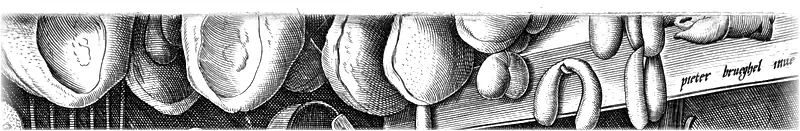
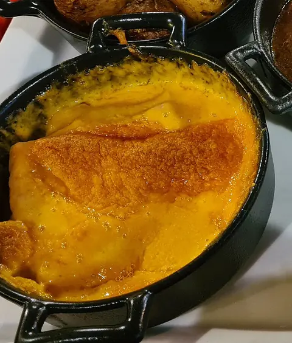
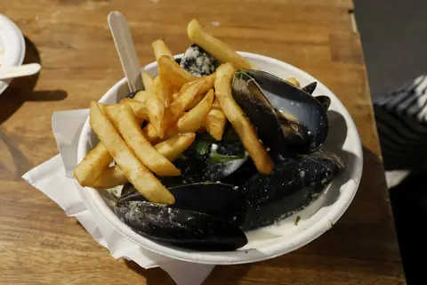
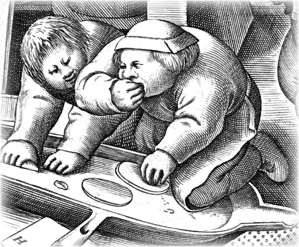

La carte
Cuisine du Nord, faite ici du matin au soir. La carte change avec les saisons, l’ardoise tous les jours.
Tout est fait maison, frites comprises.
Touchez ce que vous ne mangez pas : les plats qui en contiennent passent en gris.
Liste indicative : signalez toujours une allergie en commandant.
Pour commencer
-
Planche flamande à partager
14 €Maroilles, vieux-lille, saucisson à la bière, pâté de campagne, pickles et pain de campagne.
Allergènes : gluten, lait, moutarde, sulfites

-
Croquettes de crevettes grises
12 €Deux croquettes, crevettes de la mer du Nord, persil frit et citron.
Allergènes : crustacés, gluten, lait, œufs
-
Harengs pommes à l’huile
8,50 €Harengs fumés de Boulogne, pommes de terre tièdes, oignons rouges.
Allergènes : poisson, moutarde
-
Tarte au maroilles
9,50 €Une part bien chaude, salade de saison.
Allergènes : gluten, lait, œufs
-
Soupe du jour
7 €Selon le marché de Wazemmes : elle est écrite sur l’ardoise.
Allergènes : céleri, lait
Les plats du Nord
Servis avec des frites maison ou une salade. Les frites cuisent à la graisse de bœuf : pour un plat végétarien, demandez des pommes grenaille.
-
Carbonade flamande
18,50 €Joue de bœuf mijotée quatre heures à la bière brune, pain d’épices et moutarde.
Allergènes : gluten, moutarde, céleri

-
Potjevleesch maison
17,50 €Quatre viandes blanches en gelée, préparé la veille. Cornichons, frites et mayonnaise.
Allergènes : céleri, sulfites

-
Welsh à la bière blonde
16,50 €Cheddar fondu à la bière sur pain de campagne, jambon, moutarde, œuf au plat.
Allergènes : gluten, lait, œufs, moutarde

-
Welsh aux champignons
15,50 €Le même, sans jambon, avec des champignons poêlés.
Allergènes : gluten, lait, œufs, moutarde
-
Coq à la bière
18 €Coq fermier, bière ambrée, champignons, lardons et crème.
Allergènes : gluten, lait, céleri
-
Chicons au gratin
16 €Endives braisées roulées dans le jambon, béchamel au maroilles.
Allergènes : gluten, lait
-
Moules à la bière blanche
18,50 €De septembre à mars. Moules de bouchot, crème, céleri, frites maison.
Allergènes : mollusques, gluten, lait, céleri

-
Assiette du potager
15 €Légumes d’hiver rôtis, purée au maroilles, pommes grenaille.
Allergènes : lait
Pour les p’tits

-
Menu des p’tits, jusqu’à 10 ans
10 €Blanc de poulet ou fricadelle maison, frites, une boule de glace et un sirop. Les assiettes reviennent propres, comme sur la gravure.
Allergènes : gluten, lait
Les desserts
-
Tarte au sucre
7 €À la vergeoise brune, avec une boule de glace vanille.
Allergènes : gluten, lait, œufs
-
Crème brûlée à la chicorée
7,50 €Caramélisée minute.
Allergènes : lait, œufs

-
Gaufre fourrée
6 €Fine et fourrée à la vergeoise, comme à Lille.
Allergènes : gluten, lait, œufs

-
Dame blanche
7 €Glace vanille, chocolat chaud, chantilly.
Allergènes : lait
-
Café liégeois
7 €Glace café, café serré, chantilly.
Allergènes : lait, œufs
-
Fromages du Nord
8,50 €Maroilles, vieux-lille, mimolette vieille et pain aux noix.
Allergènes : lait, gluten, fruits à coque
À boire
Quatre bières à la pression, d’autres en bouteille, et une bière du moment qui change chaque mois. Toutes contiennent du gluten, sauf la blonde sans gluten.
Blonde de la maison
Blonde de garde, 6,5 %
25 cl 3,80 € · 50 cl 6,90 €
Ambrée de Flandre
Ronde et maltée, 7 %
25 cl 4,20 € · 50 cl 7,60 €
Blanche
Coriandre et orange, 5 %
25 cl 3,90 € · 50 cl 7,20 €
Bière de Noël
La bière du moment, épicée, 7,5 %
25 cl 4,50 € · 50 cl 8 €

En bouteille
- Triple d’abbaye, 33 cl5,50 €
- Bière de garde à partager, 75 cl15 €
- Blonde sans gluten, 33 cl5 €
- Bière sans alcool, 33 cl4,50 €
Et aussi
- Verre de côtes-du-rhône5 €
- Genièvre, 4 cl4 €
- Limonade artisanale, jus de pomme de la région3,50 €
- Sirop à l’eau2 €
- Café, café chicorée2,20 €
Prix nets, service compris. Viande bovine née, élevée et abattue en France. L’abus d’alcool est dangereux pour la santé, à consommer avec modération.